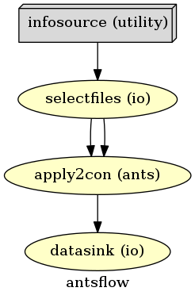
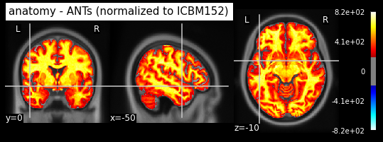
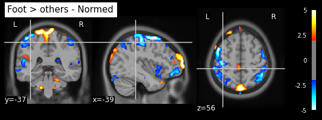
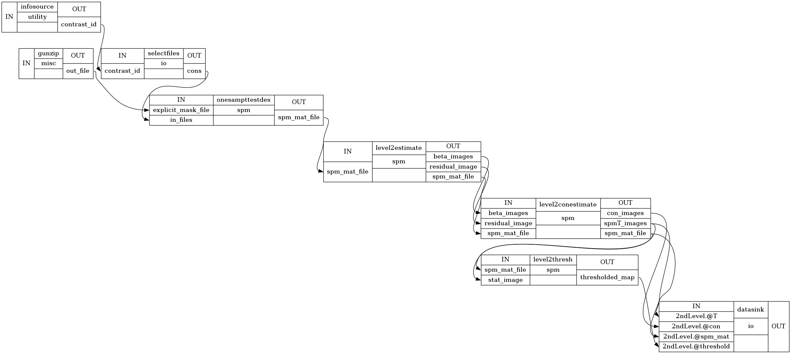
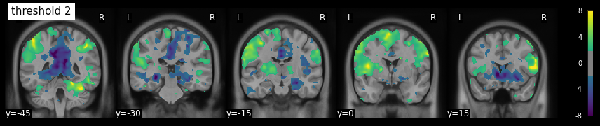
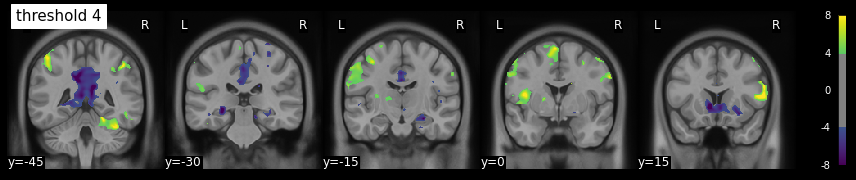
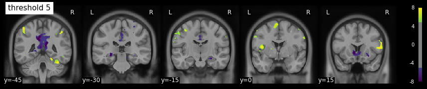
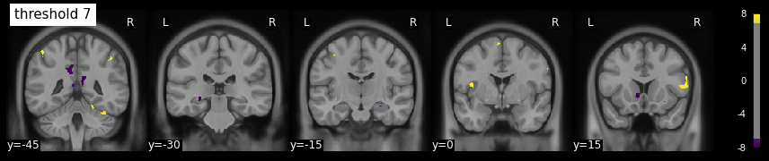

Group Analysis#

We often want to generalize the results from our experiment to out of sample data. Here we will infer from the individual subjects activation maps to one activation map for all subjects.
To do this the following steps must be done:
1. Normalize the subjects data to a common space
2. Build a second level GLM
3. Hypothesis testing

After performing first‑level (single‑subject) GLM analyses, we obtain contrast maps for each participant. These maps represent estimated effects (e.g., the difference between Finger and Baseline) in each voxel, in the subject’s native space.
The goal of group‑level analysis is to make inferences about the population from which our participants are drawn. We treat each subject’s contrast image as a “dependent variable” and build a second‑level GLM across subjects.
For each voxel, we write: $\( \beta_{subject}= X_{group}\beta_{group} + \eta \)$
where:
\(\beta_{subject}\) - a column vector containing the contrast estimates (e.g., Finger > Baseline) for all subjects at that voxel (size \(N \times 1\)).
\(X_{group}\) - the group‑level design matrix (size \(N \times p\)), with one row per subject and \(p\) regressors (e.g., an intercept for a one‑sample t‑test, or group indicators for a two‑sample t‑test).
\(\beta_{group}\) - a vector of unknown group‑level parameters (size \(p \times 1\)) that we want to estimate.
\(\eta\) – residual error (assumed normally distributed with zero mean and independent across subjects).
Then we can find \(\beta_{group}\) using ordinary least squares (OLS) and perform hypothesis testing on it.
Common Group‑Level Designs
Design |
\(X_{group}\) |
Interpretation |
|---|---|---|
One‑sample t‑test |
\([1,1,…,1]^T\) (intercept only) |
Tests if the average effect across subjects is significantly different from zero. |
Two‑sample t‑test |
Two columns: intercept + group indicator |
Tests if the mean effect differs between two independent groups (e.g., patients vs. controls). |
In our case, we start with a one‑sample t‑test to assess whether a given contrast (e.g., Finger, Foot, Lips, or Foot > others) shows a consistent effect across the group.
NI-ed is a collection of neuroimaging-related course materials developed at the University of Amsterdam (Great Explanation) - https://lukas-snoek.com/NI-edu/section_intros/5_multilevel.html
Normalize data to MNI template#
We will take the computed 1st-level contrasts from the previous experiment and normalize them into MNI-space.
Normalization with Advanced Normalization Tools (ANTs)
The normalization with ANTs requires that you first compute the transformation matrix that would bring the anatomical images of each subject into template space. Depending on your system this might take a few hours per subject. To facilitate this step, the transformation matrix is already computed for the T1 images.
We only need to download the already computed deformation field.
%%bash
datalad get -J 4 -d /data/ds000114 /data/ds000114/derivatives/fmriprep/sub-0[2345789]/anat/*h5
get(ok): derivatives/fmriprep/sub-05/anat/sub-05_t1w_space-mni152nlin2009casym_warp.h5 (file) [from web...; from origin...]
get(ok): derivatives/fmriprep/sub-08/anat/sub-08_t1w_space-mni152nlin2009casym_warp.h5 (file) [from web...; from origin...]
get(ok): derivatives/fmriprep/sub-02/anat/sub-02_t1w_space-mni152nlin2009casym_warp.h5 (file) [from web...; from origin...]
get(ok): derivatives/fmriprep/sub-07/anat/sub-07_t1w_space-mni152nlin2009casym_warp.h5 (file) [from origin...]
get(ok): derivatives/fmriprep/sub-09/anat/sub-09_t1w_space-mni152nlin2009casym_warp.h5 (file) [from origin...]
get(ok): derivatives/fmriprep/sub-04/anat/sub-04_t1w_space-mni152nlin2009casym_warp.h5 (file) [from web...; from origin...]
get(ok): derivatives/fmriprep/sub-03/anat/sub-03_t1w_space-mni152nlin2009casym_warp.h5 (file) [from web...; from origin...]
action summary:
get (notneeded: 1, ok: 7)
You can now find the data at the following paths:
!ls /data/ds000114/derivatives/fmriprep/sub-*/anat/*h5
/data/ds000114/derivatives/fmriprep/sub-01/anat/sub-01_t1w_space-mni152nlin2009casym_warp.h5
/data/ds000114/derivatives/fmriprep/sub-02/anat/sub-02_t1w_space-mni152nlin2009casym_warp.h5
/data/ds000114/derivatives/fmriprep/sub-03/anat/sub-03_t1w_space-mni152nlin2009casym_warp.h5
/data/ds000114/derivatives/fmriprep/sub-04/anat/sub-04_t1w_space-mni152nlin2009casym_warp.h5
/data/ds000114/derivatives/fmriprep/sub-05/anat/sub-05_t1w_space-mni152nlin2009casym_warp.h5
/data/ds000114/derivatives/fmriprep/sub-06/anat/sub-06_t1w_space-mni152nlin2009casym_warp.h5
/data/ds000114/derivatives/fmriprep/sub-07/anat/sub-07_t1w_space-mni152nlin2009casym_warp.h5
/data/ds000114/derivatives/fmriprep/sub-08/anat/sub-08_t1w_space-mni152nlin2009casym_warp.h5
/data/ds000114/derivatives/fmriprep/sub-09/anat/sub-09_t1w_space-mni152nlin2009casym_warp.h5
/data/ds000114/derivatives/fmriprep/sub-10/anat/sub-10_t1w_space-mni152nlin2009casym_warp.h5
To see if real data is loaded or just links, use datalad status with the --annex flag:
!datalad status -d /data/ds000114 --annex all /data/ds000114/derivatives/fmriprep/sub-*/anat/*h5
10 annex'd files (683.4 MB/976.3 MB present/total size)
Alternatively: Prepare yourself
We’re using the precomputed warp field from fmriprep, as this step otherwise would take up too much time. If you’re nonetheless interested in computing the warp parameters with ANTs yourself, without using fmriprep, either check out the script ANTS_registration.py or even quicker, use RegistrationSynQuick, Nipype’s implementation of antsRegistrationSynQuick.sh.
Imports#
First, we need to import all the modules we later want to use.
from os.path import join as opj
from nipype import Workflow, Node, MapNode
from nipype.interfaces.ants import ApplyTransforms
from nipype.interfaces.utility import IdentityInterface
from nipype.interfaces.io import SelectFiles, DataSink
from nipype.interfaces.fsl import Info
from nilearn import plotting
%matplotlib inline
from nipype.interfaces.spm import (OneSampleTTestDesign, EstimateModel,
EstimateContrast, Threshold)
from nipype.algorithms.misc import Gunzip
Experiment parameters#
We will run the group analysis without subject sub-01, sub-06 and sub-10 because they are left-handed.
This is because all subjects were asked to use their dominant hand, either right or left. There were three subjects (sub-01, sub-06 and sub-10) that were left-handed.
Because of this, We will use only right-handed subjects for the following anlysis.
experiment_dir = '/output'
output_dir = 'datasink'
working_dir = 'workingdir'
# list of subject identifiers (remember we use only right handed subjects)
subject_list = ['02', '03', '04', '05', '07', '08']
# task name
task_name = "fingerfootlips"
number_contrasts = 5 # number of contrast from 1stlevel
# Template to normalize to
template = '/data/ds000114/derivatives/fmriprep/mni_icbm152_nlin_asym_09c/1mm_T1.nii.gz'
Specify Nodes#
Initiate ANTs interface
# Apply Transformation - applies the normalization matrix to contrast images
apply2con = MapNode(ApplyTransforms(args='--float',
input_image_type=3,
interpolation='BSpline',
invert_transform_flags=[False],
num_threads=1,
reference_image=template,
terminal_output='file'),
name='apply2con', iterfield=['input_image'])
Specify input & output stream#
Specify where the input data can be found & where and how to save the output data.
# Infosource - a function free node to iterate over the list of subject names
infosource = Node(IdentityInterface(fields=['subject_id']),
name="infosource")
infosource.iterables = [('subject_id', subject_list)]
# SelectFiles - to grab the data (alternativ to DataGrabber)
templates = {'con': opj(output_dir, '1stLevel',
'sub-{subject_id}/', '???_00??.nii'),
'transform': opj('/data/ds000114/derivatives/fmriprep/', 'sub-{subject_id}', 'anat',
'sub-{subject_id}_t1w_space-mni152nlin2009casym_warp.h5')}
selectfiles = Node(SelectFiles(templates,
base_directory=experiment_dir,
sort_filelist=True),
name="selectfiles")
# Datasink - creates output folder for important outputs
datasink = Node(DataSink(base_directory=experiment_dir,
container=output_dir),
name="datasink")
# Use the following DataSink output substitutions
substitutions = [('_subject_id_', 'sub-')]
subjFolders = [('_apply2con%s/' % (i), '') for i in range(number_contrasts)]
substitutions.extend(subjFolders)
datasink.inputs.substitutions = substitutions
Specify Workflow (ANTs)#
Create a workflow and connect the interface nodes and the I/O stream to each other.
# Initiation of the ANTs normalization workflow
antsflow = Workflow(name='antsflow')
antsflow.base_dir = opj(experiment_dir, working_dir)
# Connect up the ANTs normalization components
antsflow.connect([(infosource, selectfiles, [('subject_id', 'subject_id')]),
(selectfiles, apply2con, [('con', 'input_image'),
('transform', 'transforms')]),
(apply2con, datasink, [('output_image', 'norm_ants.@con')]),
])
Visualize the workflow#
# Create ANTs normalization graph
antsflow.write_graph(graph2use='colored', format='png', simple_form=True)
# Visualize the graph
from IPython.display import Image
Image(filename=opj(antsflow.base_dir, 'antsflow', 'graph.png'))
260805-16:37:57,834 nipype.workflow INFO:
Generated workflow graph: /output/workingdir/antsflow/graph.png (graph2use=colored, simple_form=True).

Run the Workflow#
Now that everything is ready, we can run the ANTs normalization workflow.
antsflow.run('Linear')
260805-16:38:10,127 nipype.workflow INFO:
Workflow antsflow settings: ['check', 'execution', 'logging', 'monitoring']
260805-16:38:10,198 nipype.workflow INFO:
Running serially.
260805-16:38:10,199 nipype.workflow INFO:
[Node] Setting-up "antsflow.selectfiles" in "/output/workingdir/antsflow/_subject_id_08/selectfiles".
260805-16:38:10,203 nipype.workflow INFO:
[Node] Running "selectfiles" ("nipype.interfaces.io.SelectFiles")
260805-16:38:10,208 nipype.workflow INFO:
[Node] Finished "antsflow.selectfiles".
260805-16:38:10,210 nipype.workflow INFO:
[Node] Setting-up "antsflow.apply2con" in "/output/workingdir/antsflow/_subject_id_08/apply2con".
260805-16:38:10,226 nipype.workflow INFO:
[Node] Setting-up "_apply2con0" in "/output/workingdir/antsflow/_subject_id_08/apply2con/mapflow/_apply2con0".
260805-16:38:10,236 nipype.workflow INFO:
[Node] Running "_apply2con0" ("nipype.interfaces.ants.resampling.ApplyTransforms"), a CommandLine Interface with command:
antsApplyTransforms --float --default-value 0 --float 0 --input /output/datasink/1stLevel/sub-08/con_0001.nii --input-image-type 3 --interpolation BSpline --output con_0001_trans.nii --reference-image /data/ds000114/derivatives/fmriprep/mni_icbm152_nlin_asym_09c/1mm_T1.nii.gz --transform [ /data/ds000114/derivatives/fmriprep/sub-08/anat/sub-08_t1w_space-mni152nlin2009casym_warp.h5, 0 ]
260805-16:38:17,472 nipype.workflow INFO:
[Node] Finished "_apply2con0".
260805-16:38:17,481 nipype.workflow INFO:
[Node] Setting-up "_apply2con1" in "/output/workingdir/antsflow/_subject_id_08/apply2con/mapflow/_apply2con1".
260805-16:38:17,496 nipype.workflow INFO:
[Node] Running "_apply2con1" ("nipype.interfaces.ants.resampling.ApplyTransforms"), a CommandLine Interface with command:
antsApplyTransforms --float --default-value 0 --float 0 --input /output/datasink/1stLevel/sub-08/con_0002.nii --input-image-type 3 --interpolation BSpline --output con_0002_trans.nii --reference-image /data/ds000114/derivatives/fmriprep/mni_icbm152_nlin_asym_09c/1mm_T1.nii.gz --transform [ /data/ds000114/derivatives/fmriprep/sub-08/anat/sub-08_t1w_space-mni152nlin2009casym_warp.h5, 0 ]
260805-16:38:23,624 nipype.workflow INFO:
[Node] Finished "_apply2con1".
260805-16:38:23,627 nipype.workflow INFO:
[Node] Setting-up "_apply2con2" in "/output/workingdir/antsflow/_subject_id_08/apply2con/mapflow/_apply2con2".
260805-16:38:23,634 nipype.workflow INFO:
[Node] Running "_apply2con2" ("nipype.interfaces.ants.resampling.ApplyTransforms"), a CommandLine Interface with command:
antsApplyTransforms --float --default-value 0 --float 0 --input /output/datasink/1stLevel/sub-08/con_0003.nii --input-image-type 3 --interpolation BSpline --output con_0003_trans.nii --reference-image /data/ds000114/derivatives/fmriprep/mni_icbm152_nlin_asym_09c/1mm_T1.nii.gz --transform [ /data/ds000114/derivatives/fmriprep/sub-08/anat/sub-08_t1w_space-mni152nlin2009casym_warp.h5, 0 ]
260805-16:38:29,749 nipype.workflow INFO:
[Node] Finished "_apply2con2".
260805-16:38:29,753 nipype.workflow INFO:
[Node] Setting-up "_apply2con3" in "/output/workingdir/antsflow/_subject_id_08/apply2con/mapflow/_apply2con3".
260805-16:38:29,760 nipype.workflow INFO:
[Node] Running "_apply2con3" ("nipype.interfaces.ants.resampling.ApplyTransforms"), a CommandLine Interface with command:
antsApplyTransforms --float --default-value 0 --float 0 --input /output/datasink/1stLevel/sub-08/con_0004.nii --input-image-type 3 --interpolation BSpline --output con_0004_trans.nii --reference-image /data/ds000114/derivatives/fmriprep/mni_icbm152_nlin_asym_09c/1mm_T1.nii.gz --transform [ /data/ds000114/derivatives/fmriprep/sub-08/anat/sub-08_t1w_space-mni152nlin2009casym_warp.h5, 0 ]
260805-16:38:36,258 nipype.workflow INFO:
[Node] Finished "_apply2con3".
260805-16:38:36,261 nipype.workflow INFO:
[Node] Setting-up "_apply2con4" in "/output/workingdir/antsflow/_subject_id_08/apply2con/mapflow/_apply2con4".
260805-16:38:36,269 nipype.workflow INFO:
[Node] Running "_apply2con4" ("nipype.interfaces.ants.resampling.ApplyTransforms"), a CommandLine Interface with command:
antsApplyTransforms --float --default-value 0 --float 0 --input /output/datasink/1stLevel/sub-08/con_0005.nii --input-image-type 3 --interpolation BSpline --output con_0005_trans.nii --reference-image /data/ds000114/derivatives/fmriprep/mni_icbm152_nlin_asym_09c/1mm_T1.nii.gz --transform [ /data/ds000114/derivatives/fmriprep/sub-08/anat/sub-08_t1w_space-mni152nlin2009casym_warp.h5, 0 ]
260805-16:38:42,516 nipype.workflow INFO:
[Node] Finished "_apply2con4".
260805-16:38:42,520 nipype.workflow INFO:
[Node] Setting-up "_apply2con5" in "/output/workingdir/antsflow/_subject_id_08/apply2con/mapflow/_apply2con5".
260805-16:38:42,526 nipype.workflow INFO:
[Node] Running "_apply2con5" ("nipype.interfaces.ants.resampling.ApplyTransforms"), a CommandLine Interface with command:
antsApplyTransforms --float --default-value 0 --float 0 --input /output/datasink/1stLevel/sub-08/ess_0006.nii --input-image-type 3 --interpolation BSpline --output ess_0006_trans.nii --reference-image /data/ds000114/derivatives/fmriprep/mni_icbm152_nlin_asym_09c/1mm_T1.nii.gz --transform [ /data/ds000114/derivatives/fmriprep/sub-08/anat/sub-08_t1w_space-mni152nlin2009casym_warp.h5, 0 ]
260805-16:38:48,636 nipype.workflow INFO:
[Node] Finished "_apply2con5".
260805-16:38:48,644 nipype.workflow INFO:
[Node] Finished "antsflow.apply2con".
260805-16:38:48,645 nipype.workflow INFO:
[Node] Setting-up "antsflow.datasink" in "/output/workingdir/antsflow/_subject_id_08/datasink".
260805-16:38:48,654 nipype.workflow INFO:
[Node] Running "datasink" ("nipype.interfaces.io.DataSink")
260805-16:38:48,656 nipype.interface INFO:
sub: /output/datasink/norm_ants/_subject_id_08/_apply2con0/con_0001_trans.nii -> /output/datasink/norm_ants/sub-08/con_0001_trans.nii
260805-16:38:48,657 nipype.interface INFO:
sub: /output/datasink/norm_ants/_subject_id_08/_apply2con1/con_0002_trans.nii -> /output/datasink/norm_ants/sub-08/con_0002_trans.nii
260805-16:38:48,659 nipype.interface INFO:
sub: /output/datasink/norm_ants/_subject_id_08/_apply2con2/con_0003_trans.nii -> /output/datasink/norm_ants/sub-08/con_0003_trans.nii
260805-16:38:48,661 nipype.interface INFO:
sub: /output/datasink/norm_ants/_subject_id_08/_apply2con3/con_0004_trans.nii -> /output/datasink/norm_ants/sub-08/con_0004_trans.nii
260805-16:38:48,662 nipype.interface INFO:
sub: /output/datasink/norm_ants/_subject_id_08/_apply2con4/con_0005_trans.nii -> /output/datasink/norm_ants/sub-08/con_0005_trans.nii
260805-16:38:48,664 nipype.interface INFO:
sub: /output/datasink/norm_ants/_subject_id_08/_apply2con5/ess_0006_trans.nii -> /output/datasink/norm_ants/sub-08/_apply2con5/ess_0006_trans.nii
260805-16:38:48,668 nipype.workflow INFO:
[Node] Finished "antsflow.datasink".
260805-16:38:48,669 nipype.workflow INFO:
[Node] Setting-up "antsflow.selectfiles" in "/output/workingdir/antsflow/_subject_id_07/selectfiles".
260805-16:38:48,673 nipype.workflow INFO:
[Node] Running "selectfiles" ("nipype.interfaces.io.SelectFiles")
260805-16:38:48,678 nipype.workflow INFO:
[Node] Finished "antsflow.selectfiles".
260805-16:38:48,679 nipype.workflow INFO:
[Node] Setting-up "antsflow.apply2con" in "/output/workingdir/antsflow/_subject_id_07/apply2con".
260805-16:38:48,686 nipype.workflow INFO:
[Node] Setting-up "_apply2con0" in "/output/workingdir/antsflow/_subject_id_07/apply2con/mapflow/_apply2con0".
260805-16:38:48,690 nipype.workflow INFO:
[Node] Running "_apply2con0" ("nipype.interfaces.ants.resampling.ApplyTransforms"), a CommandLine Interface with command:
antsApplyTransforms --float --default-value 0 --float 0 --input /output/datasink/1stLevel/sub-07/con_0001.nii --input-image-type 3 --interpolation BSpline --output con_0001_trans.nii --reference-image /data/ds000114/derivatives/fmriprep/mni_icbm152_nlin_asym_09c/1mm_T1.nii.gz --transform [ /data/ds000114/derivatives/fmriprep/sub-07/anat/sub-07_t1w_space-mni152nlin2009casym_warp.h5, 0 ]
260805-16:38:54,827 nipype.workflow INFO:
[Node] Finished "_apply2con0".
260805-16:38:54,831 nipype.workflow INFO:
[Node] Setting-up "_apply2con1" in "/output/workingdir/antsflow/_subject_id_07/apply2con/mapflow/_apply2con1".
260805-16:38:54,837 nipype.workflow INFO:
[Node] Running "_apply2con1" ("nipype.interfaces.ants.resampling.ApplyTransforms"), a CommandLine Interface with command:
antsApplyTransforms --float --default-value 0 --float 0 --input /output/datasink/1stLevel/sub-07/con_0002.nii --input-image-type 3 --interpolation BSpline --output con_0002_trans.nii --reference-image /data/ds000114/derivatives/fmriprep/mni_icbm152_nlin_asym_09c/1mm_T1.nii.gz --transform [ /data/ds000114/derivatives/fmriprep/sub-07/anat/sub-07_t1w_space-mni152nlin2009casym_warp.h5, 0 ]
260805-16:39:01,148 nipype.workflow INFO:
[Node] Finished "_apply2con1".
260805-16:39:01,151 nipype.workflow INFO:
[Node] Setting-up "_apply2con2" in "/output/workingdir/antsflow/_subject_id_07/apply2con/mapflow/_apply2con2".
260805-16:39:01,158 nipype.workflow INFO:
[Node] Running "_apply2con2" ("nipype.interfaces.ants.resampling.ApplyTransforms"), a CommandLine Interface with command:
antsApplyTransforms --float --default-value 0 --float 0 --input /output/datasink/1stLevel/sub-07/con_0003.nii --input-image-type 3 --interpolation BSpline --output con_0003_trans.nii --reference-image /data/ds000114/derivatives/fmriprep/mni_icbm152_nlin_asym_09c/1mm_T1.nii.gz --transform [ /data/ds000114/derivatives/fmriprep/sub-07/anat/sub-07_t1w_space-mni152nlin2009casym_warp.h5, 0 ]
260805-16:39:07,273 nipype.workflow INFO:
[Node] Finished "_apply2con2".
260805-16:39:07,283 nipype.workflow INFO:
[Node] Setting-up "_apply2con3" in "/output/workingdir/antsflow/_subject_id_07/apply2con/mapflow/_apply2con3".
260805-16:39:07,290 nipype.workflow INFO:
[Node] Running "_apply2con3" ("nipype.interfaces.ants.resampling.ApplyTransforms"), a CommandLine Interface with command:
antsApplyTransforms --float --default-value 0 --float 0 --input /output/datasink/1stLevel/sub-07/con_0004.nii --input-image-type 3 --interpolation BSpline --output con_0004_trans.nii --reference-image /data/ds000114/derivatives/fmriprep/mni_icbm152_nlin_asym_09c/1mm_T1.nii.gz --transform [ /data/ds000114/derivatives/fmriprep/sub-07/anat/sub-07_t1w_space-mni152nlin2009casym_warp.h5, 0 ]
260805-16:39:13,352 nipype.workflow INFO:
[Node] Finished "_apply2con3".
260805-16:39:13,355 nipype.workflow INFO:
[Node] Setting-up "_apply2con4" in "/output/workingdir/antsflow/_subject_id_07/apply2con/mapflow/_apply2con4".
260805-16:39:13,362 nipype.workflow INFO:
[Node] Running "_apply2con4" ("nipype.interfaces.ants.resampling.ApplyTransforms"), a CommandLine Interface with command:
antsApplyTransforms --float --default-value 0 --float 0 --input /output/datasink/1stLevel/sub-07/con_0005.nii --input-image-type 3 --interpolation BSpline --output con_0005_trans.nii --reference-image /data/ds000114/derivatives/fmriprep/mni_icbm152_nlin_asym_09c/1mm_T1.nii.gz --transform [ /data/ds000114/derivatives/fmriprep/sub-07/anat/sub-07_t1w_space-mni152nlin2009casym_warp.h5, 0 ]
260805-16:39:19,468 nipype.workflow INFO:
[Node] Finished "_apply2con4".
260805-16:39:19,470 nipype.workflow INFO:
[Node] Setting-up "_apply2con5" in "/output/workingdir/antsflow/_subject_id_07/apply2con/mapflow/_apply2con5".
260805-16:39:19,476 nipype.workflow INFO:
[Node] Running "_apply2con5" ("nipype.interfaces.ants.resampling.ApplyTransforms"), a CommandLine Interface with command:
antsApplyTransforms --float --default-value 0 --float 0 --input /output/datasink/1stLevel/sub-07/ess_0006.nii --input-image-type 3 --interpolation BSpline --output ess_0006_trans.nii --reference-image /data/ds000114/derivatives/fmriprep/mni_icbm152_nlin_asym_09c/1mm_T1.nii.gz --transform [ /data/ds000114/derivatives/fmriprep/sub-07/anat/sub-07_t1w_space-mni152nlin2009casym_warp.h5, 0 ]
260805-16:39:25,858 nipype.workflow INFO:
[Node] Finished "_apply2con5".
260805-16:39:25,864 nipype.workflow INFO:
[Node] Finished "antsflow.apply2con".
260805-16:39:25,865 nipype.workflow INFO:
[Node] Setting-up "antsflow.datasink" in "/output/workingdir/antsflow/_subject_id_07/datasink".
260805-16:39:25,875 nipype.workflow INFO:
[Node] Running "datasink" ("nipype.interfaces.io.DataSink")
260805-16:39:25,877 nipype.interface INFO:
sub: /output/datasink/norm_ants/_subject_id_07/_apply2con0/con_0001_trans.nii -> /output/datasink/norm_ants/sub-07/con_0001_trans.nii
260805-16:39:25,879 nipype.interface INFO:
sub: /output/datasink/norm_ants/_subject_id_07/_apply2con1/con_0002_trans.nii -> /output/datasink/norm_ants/sub-07/con_0002_trans.nii
260805-16:39:25,881 nipype.interface INFO:
sub: /output/datasink/norm_ants/_subject_id_07/_apply2con2/con_0003_trans.nii -> /output/datasink/norm_ants/sub-07/con_0003_trans.nii
260805-16:39:25,883 nipype.interface INFO:
sub: /output/datasink/norm_ants/_subject_id_07/_apply2con3/con_0004_trans.nii -> /output/datasink/norm_ants/sub-07/con_0004_trans.nii
260805-16:39:25,885 nipype.interface INFO:
sub: /output/datasink/norm_ants/_subject_id_07/_apply2con4/con_0005_trans.nii -> /output/datasink/norm_ants/sub-07/con_0005_trans.nii
260805-16:39:25,887 nipype.interface INFO:
sub: /output/datasink/norm_ants/_subject_id_07/_apply2con5/ess_0006_trans.nii -> /output/datasink/norm_ants/sub-07/_apply2con5/ess_0006_trans.nii
260805-16:39:25,895 nipype.workflow INFO:
[Node] Finished "antsflow.datasink".
260805-16:39:25,896 nipype.workflow INFO:
[Node] Setting-up "antsflow.selectfiles" in "/output/workingdir/antsflow/_subject_id_05/selectfiles".
260805-16:39:25,902 nipype.workflow INFO:
[Node] Running "selectfiles" ("nipype.interfaces.io.SelectFiles")
260805-16:39:25,907 nipype.workflow INFO:
[Node] Finished "antsflow.selectfiles".
260805-16:39:25,908 nipype.workflow INFO:
[Node] Setting-up "antsflow.apply2con" in "/output/workingdir/antsflow/_subject_id_05/apply2con".
260805-16:39:25,922 nipype.workflow INFO:
[Node] Setting-up "_apply2con0" in "/output/workingdir/antsflow/_subject_id_05/apply2con/mapflow/_apply2con0".
260805-16:39:25,928 nipype.workflow INFO:
[Node] Running "_apply2con0" ("nipype.interfaces.ants.resampling.ApplyTransforms"), a CommandLine Interface with command:
antsApplyTransforms --float --default-value 0 --float 0 --input /output/datasink/1stLevel/sub-05/con_0001.nii --input-image-type 3 --interpolation BSpline --output con_0001_trans.nii --reference-image /data/ds000114/derivatives/fmriprep/mni_icbm152_nlin_asym_09c/1mm_T1.nii.gz --transform [ /data/ds000114/derivatives/fmriprep/sub-05/anat/sub-05_t1w_space-mni152nlin2009casym_warp.h5, 0 ]
260805-16:39:32,400 nipype.workflow INFO:
[Node] Finished "_apply2con0".
260805-16:39:32,404 nipype.workflow INFO:
[Node] Setting-up "_apply2con1" in "/output/workingdir/antsflow/_subject_id_05/apply2con/mapflow/_apply2con1".
260805-16:39:32,410 nipype.workflow INFO:
[Node] Running "_apply2con1" ("nipype.interfaces.ants.resampling.ApplyTransforms"), a CommandLine Interface with command:
antsApplyTransforms --float --default-value 0 --float 0 --input /output/datasink/1stLevel/sub-05/con_0002.nii --input-image-type 3 --interpolation BSpline --output con_0002_trans.nii --reference-image /data/ds000114/derivatives/fmriprep/mni_icbm152_nlin_asym_09c/1mm_T1.nii.gz --transform [ /data/ds000114/derivatives/fmriprep/sub-05/anat/sub-05_t1w_space-mni152nlin2009casym_warp.h5, 0 ]
260805-16:39:39,150 nipype.workflow INFO:
[Node] Finished "_apply2con1".
260805-16:39:39,153 nipype.workflow INFO:
[Node] Setting-up "_apply2con2" in "/output/workingdir/antsflow/_subject_id_05/apply2con/mapflow/_apply2con2".
260805-16:39:39,160 nipype.workflow INFO:
[Node] Running "_apply2con2" ("nipype.interfaces.ants.resampling.ApplyTransforms"), a CommandLine Interface with command:
antsApplyTransforms --float --default-value 0 --float 0 --input /output/datasink/1stLevel/sub-05/con_0003.nii --input-image-type 3 --interpolation BSpline --output con_0003_trans.nii --reference-image /data/ds000114/derivatives/fmriprep/mni_icbm152_nlin_asym_09c/1mm_T1.nii.gz --transform [ /data/ds000114/derivatives/fmriprep/sub-05/anat/sub-05_t1w_space-mni152nlin2009casym_warp.h5, 0 ]
260805-16:39:45,716 nipype.workflow INFO:
[Node] Finished "_apply2con2".
260805-16:39:45,719 nipype.workflow INFO:
[Node] Setting-up "_apply2con3" in "/output/workingdir/antsflow/_subject_id_05/apply2con/mapflow/_apply2con3".
260805-16:39:45,725 nipype.workflow INFO:
[Node] Running "_apply2con3" ("nipype.interfaces.ants.resampling.ApplyTransforms"), a CommandLine Interface with command:
antsApplyTransforms --float --default-value 0 --float 0 --input /output/datasink/1stLevel/sub-05/con_0004.nii --input-image-type 3 --interpolation BSpline --output con_0004_trans.nii --reference-image /data/ds000114/derivatives/fmriprep/mni_icbm152_nlin_asym_09c/1mm_T1.nii.gz --transform [ /data/ds000114/derivatives/fmriprep/sub-05/anat/sub-05_t1w_space-mni152nlin2009casym_warp.h5, 0 ]
260805-16:39:51,764 nipype.workflow INFO:
[Node] Finished "_apply2con3".
260805-16:39:51,768 nipype.workflow INFO:
[Node] Setting-up "_apply2con4" in "/output/workingdir/antsflow/_subject_id_05/apply2con/mapflow/_apply2con4".
260805-16:39:51,774 nipype.workflow INFO:
[Node] Running "_apply2con4" ("nipype.interfaces.ants.resampling.ApplyTransforms"), a CommandLine Interface with command:
antsApplyTransforms --float --default-value 0 --float 0 --input /output/datasink/1stLevel/sub-05/con_0005.nii --input-image-type 3 --interpolation BSpline --output con_0005_trans.nii --reference-image /data/ds000114/derivatives/fmriprep/mni_icbm152_nlin_asym_09c/1mm_T1.nii.gz --transform [ /data/ds000114/derivatives/fmriprep/sub-05/anat/sub-05_t1w_space-mni152nlin2009casym_warp.h5, 0 ]
260805-16:39:57,980 nipype.workflow INFO:
[Node] Finished "_apply2con4".
260805-16:39:57,985 nipype.workflow INFO:
[Node] Setting-up "_apply2con5" in "/output/workingdir/antsflow/_subject_id_05/apply2con/mapflow/_apply2con5".
260805-16:39:57,990 nipype.workflow INFO:
[Node] Running "_apply2con5" ("nipype.interfaces.ants.resampling.ApplyTransforms"), a CommandLine Interface with command:
antsApplyTransforms --float --default-value 0 --float 0 --input /output/datasink/1stLevel/sub-05/ess_0006.nii --input-image-type 3 --interpolation BSpline --output ess_0006_trans.nii --reference-image /data/ds000114/derivatives/fmriprep/mni_icbm152_nlin_asym_09c/1mm_T1.nii.gz --transform [ /data/ds000114/derivatives/fmriprep/sub-05/anat/sub-05_t1w_space-mni152nlin2009casym_warp.h5, 0 ]
260805-16:40:03,877 nipype.workflow INFO:
[Node] Finished "_apply2con5".
260805-16:40:03,884 nipype.workflow INFO:
[Node] Finished "antsflow.apply2con".
260805-16:40:03,885 nipype.workflow INFO:
[Node] Setting-up "antsflow.datasink" in "/output/workingdir/antsflow/_subject_id_05/datasink".
260805-16:40:03,895 nipype.workflow INFO:
[Node] Running "datasink" ("nipype.interfaces.io.DataSink")
260805-16:40:03,898 nipype.interface INFO:
sub: /output/datasink/norm_ants/_subject_id_05/_apply2con0/con_0001_trans.nii -> /output/datasink/norm_ants/sub-05/con_0001_trans.nii
260805-16:40:03,900 nipype.interface INFO:
sub: /output/datasink/norm_ants/_subject_id_05/_apply2con1/con_0002_trans.nii -> /output/datasink/norm_ants/sub-05/con_0002_trans.nii
260805-16:40:03,902 nipype.interface INFO:
sub: /output/datasink/norm_ants/_subject_id_05/_apply2con2/con_0003_trans.nii -> /output/datasink/norm_ants/sub-05/con_0003_trans.nii
260805-16:40:03,904 nipype.interface INFO:
sub: /output/datasink/norm_ants/_subject_id_05/_apply2con3/con_0004_trans.nii -> /output/datasink/norm_ants/sub-05/con_0004_trans.nii
260805-16:40:03,905 nipype.interface INFO:
sub: /output/datasink/norm_ants/_subject_id_05/_apply2con4/con_0005_trans.nii -> /output/datasink/norm_ants/sub-05/con_0005_trans.nii
260805-16:40:03,907 nipype.interface INFO:
sub: /output/datasink/norm_ants/_subject_id_05/_apply2con5/ess_0006_trans.nii -> /output/datasink/norm_ants/sub-05/_apply2con5/ess_0006_trans.nii
260805-16:40:03,914 nipype.workflow INFO:
[Node] Finished "antsflow.datasink".
260805-16:40:03,916 nipype.workflow INFO:
[Node] Setting-up "antsflow.selectfiles" in "/output/workingdir/antsflow/_subject_id_04/selectfiles".
260805-16:40:03,921 nipype.workflow INFO:
[Node] Running "selectfiles" ("nipype.interfaces.io.SelectFiles")
260805-16:40:03,930 nipype.workflow INFO:
[Node] Finished "antsflow.selectfiles".
260805-16:40:03,932 nipype.workflow INFO:
[Node] Setting-up "antsflow.apply2con" in "/output/workingdir/antsflow/_subject_id_04/apply2con".
260805-16:40:03,945 nipype.workflow INFO:
[Node] Setting-up "_apply2con0" in "/output/workingdir/antsflow/_subject_id_04/apply2con/mapflow/_apply2con0".
260805-16:40:03,952 nipype.workflow INFO:
[Node] Running "_apply2con0" ("nipype.interfaces.ants.resampling.ApplyTransforms"), a CommandLine Interface with command:
antsApplyTransforms --float --default-value 0 --float 0 --input /output/datasink/1stLevel/sub-04/con_0001.nii --input-image-type 3 --interpolation BSpline --output con_0001_trans.nii --reference-image /data/ds000114/derivatives/fmriprep/mni_icbm152_nlin_asym_09c/1mm_T1.nii.gz --transform [ /data/ds000114/derivatives/fmriprep/sub-04/anat/sub-04_t1w_space-mni152nlin2009casym_warp.h5, 0 ]
260805-16:40:09,877 nipype.workflow INFO:
[Node] Finished "_apply2con0".
260805-16:40:09,882 nipype.workflow INFO:
[Node] Setting-up "_apply2con1" in "/output/workingdir/antsflow/_subject_id_04/apply2con/mapflow/_apply2con1".
260805-16:40:09,891 nipype.workflow INFO:
[Node] Running "_apply2con1" ("nipype.interfaces.ants.resampling.ApplyTransforms"), a CommandLine Interface with command:
antsApplyTransforms --float --default-value 0 --float 0 --input /output/datasink/1stLevel/sub-04/con_0002.nii --input-image-type 3 --interpolation BSpline --output con_0002_trans.nii --reference-image /data/ds000114/derivatives/fmriprep/mni_icbm152_nlin_asym_09c/1mm_T1.nii.gz --transform [ /data/ds000114/derivatives/fmriprep/sub-04/anat/sub-04_t1w_space-mni152nlin2009casym_warp.h5, 0 ]
260805-16:40:15,868 nipype.workflow INFO:
[Node] Finished "_apply2con1".
260805-16:40:15,871 nipype.workflow INFO:
[Node] Setting-up "_apply2con2" in "/output/workingdir/antsflow/_subject_id_04/apply2con/mapflow/_apply2con2".
260805-16:40:15,877 nipype.workflow INFO:
[Node] Running "_apply2con2" ("nipype.interfaces.ants.resampling.ApplyTransforms"), a CommandLine Interface with command:
antsApplyTransforms --float --default-value 0 --float 0 --input /output/datasink/1stLevel/sub-04/con_0003.nii --input-image-type 3 --interpolation BSpline --output con_0003_trans.nii --reference-image /data/ds000114/derivatives/fmriprep/mni_icbm152_nlin_asym_09c/1mm_T1.nii.gz --transform [ /data/ds000114/derivatives/fmriprep/sub-04/anat/sub-04_t1w_space-mni152nlin2009casym_warp.h5, 0 ]
260805-16:40:21,591 nipype.workflow INFO:
[Node] Finished "_apply2con2".
260805-16:40:21,596 nipype.workflow INFO:
[Node] Setting-up "_apply2con3" in "/output/workingdir/antsflow/_subject_id_04/apply2con/mapflow/_apply2con3".
260805-16:40:21,604 nipype.workflow INFO:
[Node] Running "_apply2con3" ("nipype.interfaces.ants.resampling.ApplyTransforms"), a CommandLine Interface with command:
antsApplyTransforms --float --default-value 0 --float 0 --input /output/datasink/1stLevel/sub-04/con_0004.nii --input-image-type 3 --interpolation BSpline --output con_0004_trans.nii --reference-image /data/ds000114/derivatives/fmriprep/mni_icbm152_nlin_asym_09c/1mm_T1.nii.gz --transform [ /data/ds000114/derivatives/fmriprep/sub-04/anat/sub-04_t1w_space-mni152nlin2009casym_warp.h5, 0 ]
260805-16:40:27,713 nipype.workflow INFO:
[Node] Finished "_apply2con3".
260805-16:40:27,717 nipype.workflow INFO:
[Node] Setting-up "_apply2con4" in "/output/workingdir/antsflow/_subject_id_04/apply2con/mapflow/_apply2con4".
260805-16:40:27,723 nipype.workflow INFO:
[Node] Running "_apply2con4" ("nipype.interfaces.ants.resampling.ApplyTransforms"), a CommandLine Interface with command:
antsApplyTransforms --float --default-value 0 --float 0 --input /output/datasink/1stLevel/sub-04/con_0005.nii --input-image-type 3 --interpolation BSpline --output con_0005_trans.nii --reference-image /data/ds000114/derivatives/fmriprep/mni_icbm152_nlin_asym_09c/1mm_T1.nii.gz --transform [ /data/ds000114/derivatives/fmriprep/sub-04/anat/sub-04_t1w_space-mni152nlin2009casym_warp.h5, 0 ]
260805-16:40:33,828 nipype.workflow INFO:
[Node] Finished "_apply2con4".
260805-16:40:33,830 nipype.workflow INFO:
[Node] Setting-up "_apply2con5" in "/output/workingdir/antsflow/_subject_id_04/apply2con/mapflow/_apply2con5".
260805-16:40:33,835 nipype.workflow INFO:
[Node] Running "_apply2con5" ("nipype.interfaces.ants.resampling.ApplyTransforms"), a CommandLine Interface with command:
antsApplyTransforms --float --default-value 0 --float 0 --input /output/datasink/1stLevel/sub-04/ess_0006.nii --input-image-type 3 --interpolation BSpline --output ess_0006_trans.nii --reference-image /data/ds000114/derivatives/fmriprep/mni_icbm152_nlin_asym_09c/1mm_T1.nii.gz --transform [ /data/ds000114/derivatives/fmriprep/sub-04/anat/sub-04_t1w_space-mni152nlin2009casym_warp.h5, 0 ]
260805-16:40:39,494 nipype.workflow INFO:
[Node] Finished "_apply2con5".
260805-16:40:39,500 nipype.workflow INFO:
[Node] Finished "antsflow.apply2con".
260805-16:40:39,502 nipype.workflow INFO:
[Node] Setting-up "antsflow.datasink" in "/output/workingdir/antsflow/_subject_id_04/datasink".
260805-16:40:39,510 nipype.workflow INFO:
[Node] Running "datasink" ("nipype.interfaces.io.DataSink")
260805-16:40:39,512 nipype.interface INFO:
sub: /output/datasink/norm_ants/_subject_id_04/_apply2con0/con_0001_trans.nii -> /output/datasink/norm_ants/sub-04/con_0001_trans.nii
260805-16:40:39,514 nipype.interface INFO:
sub: /output/datasink/norm_ants/_subject_id_04/_apply2con1/con_0002_trans.nii -> /output/datasink/norm_ants/sub-04/con_0002_trans.nii
260805-16:40:39,516 nipype.interface INFO:
sub: /output/datasink/norm_ants/_subject_id_04/_apply2con2/con_0003_trans.nii -> /output/datasink/norm_ants/sub-04/con_0003_trans.nii
260805-16:40:39,518 nipype.interface INFO:
sub: /output/datasink/norm_ants/_subject_id_04/_apply2con3/con_0004_trans.nii -> /output/datasink/norm_ants/sub-04/con_0004_trans.nii
260805-16:40:39,520 nipype.interface INFO:
sub: /output/datasink/norm_ants/_subject_id_04/_apply2con4/con_0005_trans.nii -> /output/datasink/norm_ants/sub-04/con_0005_trans.nii
260805-16:40:39,522 nipype.interface INFO:
sub: /output/datasink/norm_ants/_subject_id_04/_apply2con5/ess_0006_trans.nii -> /output/datasink/norm_ants/sub-04/_apply2con5/ess_0006_trans.nii
260805-16:40:39,529 nipype.workflow INFO:
[Node] Finished "antsflow.datasink".
260805-16:40:39,531 nipype.workflow INFO:
[Node] Setting-up "antsflow.selectfiles" in "/output/workingdir/antsflow/_subject_id_03/selectfiles".
260805-16:40:39,536 nipype.workflow INFO:
[Node] Running "selectfiles" ("nipype.interfaces.io.SelectFiles")
260805-16:40:39,542 nipype.workflow INFO:
[Node] Finished "antsflow.selectfiles".
260805-16:40:39,543 nipype.workflow INFO:
[Node] Setting-up "antsflow.apply2con" in "/output/workingdir/antsflow/_subject_id_03/apply2con".
260805-16:40:39,557 nipype.workflow INFO:
[Node] Setting-up "_apply2con0" in "/output/workingdir/antsflow/_subject_id_03/apply2con/mapflow/_apply2con0".
260805-16:40:39,563 nipype.workflow INFO:
[Node] Running "_apply2con0" ("nipype.interfaces.ants.resampling.ApplyTransforms"), a CommandLine Interface with command:
antsApplyTransforms --float --default-value 0 --float 0 --input /output/datasink/1stLevel/sub-03/con_0001.nii --input-image-type 3 --interpolation BSpline --output con_0001_trans.nii --reference-image /data/ds000114/derivatives/fmriprep/mni_icbm152_nlin_asym_09c/1mm_T1.nii.gz --transform [ /data/ds000114/derivatives/fmriprep/sub-03/anat/sub-03_t1w_space-mni152nlin2009casym_warp.h5, 0 ]
260805-16:40:45,720 nipype.workflow INFO:
[Node] Finished "_apply2con0".
260805-16:40:45,723 nipype.workflow INFO:
[Node] Setting-up "_apply2con1" in "/output/workingdir/antsflow/_subject_id_03/apply2con/mapflow/_apply2con1".
260805-16:40:45,730 nipype.workflow INFO:
[Node] Running "_apply2con1" ("nipype.interfaces.ants.resampling.ApplyTransforms"), a CommandLine Interface with command:
antsApplyTransforms --float --default-value 0 --float 0 --input /output/datasink/1stLevel/sub-03/con_0002.nii --input-image-type 3 --interpolation BSpline --output con_0002_trans.nii --reference-image /data/ds000114/derivatives/fmriprep/mni_icbm152_nlin_asym_09c/1mm_T1.nii.gz --transform [ /data/ds000114/derivatives/fmriprep/sub-03/anat/sub-03_t1w_space-mni152nlin2009casym_warp.h5, 0 ]
260805-16:40:51,786 nipype.workflow INFO:
[Node] Finished "_apply2con1".
260805-16:40:51,790 nipype.workflow INFO:
[Node] Setting-up "_apply2con2" in "/output/workingdir/antsflow/_subject_id_03/apply2con/mapflow/_apply2con2".
260805-16:40:51,796 nipype.workflow INFO:
[Node] Running "_apply2con2" ("nipype.interfaces.ants.resampling.ApplyTransforms"), a CommandLine Interface with command:
antsApplyTransforms --float --default-value 0 --float 0 --input /output/datasink/1stLevel/sub-03/con_0003.nii --input-image-type 3 --interpolation BSpline --output con_0003_trans.nii --reference-image /data/ds000114/derivatives/fmriprep/mni_icbm152_nlin_asym_09c/1mm_T1.nii.gz --transform [ /data/ds000114/derivatives/fmriprep/sub-03/anat/sub-03_t1w_space-mni152nlin2009casym_warp.h5, 0 ]
260805-16:40:57,815 nipype.workflow INFO:
[Node] Finished "_apply2con2".
260805-16:40:58,16 nipype.workflow INFO:
[Node] Setting-up "_apply2con3" in "/output/workingdir/antsflow/_subject_id_03/apply2con/mapflow/_apply2con3".
260805-16:40:58,23 nipype.workflow INFO:
[Node] Running "_apply2con3" ("nipype.interfaces.ants.resampling.ApplyTransforms"), a CommandLine Interface with command:
antsApplyTransforms --float --default-value 0 --float 0 --input /output/datasink/1stLevel/sub-03/con_0004.nii --input-image-type 3 --interpolation BSpline --output con_0004_trans.nii --reference-image /data/ds000114/derivatives/fmriprep/mni_icbm152_nlin_asym_09c/1mm_T1.nii.gz --transform [ /data/ds000114/derivatives/fmriprep/sub-03/anat/sub-03_t1w_space-mni152nlin2009casym_warp.h5, 0 ]
260805-16:41:04,5 nipype.workflow INFO:
[Node] Finished "_apply2con3".
260805-16:41:04,8 nipype.workflow INFO:
[Node] Setting-up "_apply2con4" in "/output/workingdir/antsflow/_subject_id_03/apply2con/mapflow/_apply2con4".
260805-16:41:04,14 nipype.workflow INFO:
[Node] Running "_apply2con4" ("nipype.interfaces.ants.resampling.ApplyTransforms"), a CommandLine Interface with command:
antsApplyTransforms --float --default-value 0 --float 0 --input /output/datasink/1stLevel/sub-03/con_0005.nii --input-image-type 3 --interpolation BSpline --output con_0005_trans.nii --reference-image /data/ds000114/derivatives/fmriprep/mni_icbm152_nlin_asym_09c/1mm_T1.nii.gz --transform [ /data/ds000114/derivatives/fmriprep/sub-03/anat/sub-03_t1w_space-mni152nlin2009casym_warp.h5, 0 ]
260805-16:41:10,1 nipype.workflow INFO:
[Node] Finished "_apply2con4".
260805-16:41:10,4 nipype.workflow INFO:
[Node] Setting-up "_apply2con5" in "/output/workingdir/antsflow/_subject_id_03/apply2con/mapflow/_apply2con5".
260805-16:41:10,9 nipype.workflow INFO:
[Node] Running "_apply2con5" ("nipype.interfaces.ants.resampling.ApplyTransforms"), a CommandLine Interface with command:
antsApplyTransforms --float --default-value 0 --float 0 --input /output/datasink/1stLevel/sub-03/ess_0006.nii --input-image-type 3 --interpolation BSpline --output ess_0006_trans.nii --reference-image /data/ds000114/derivatives/fmriprep/mni_icbm152_nlin_asym_09c/1mm_T1.nii.gz --transform [ /data/ds000114/derivatives/fmriprep/sub-03/anat/sub-03_t1w_space-mni152nlin2009casym_warp.h5, 0 ]
260805-16:41:16,150 nipype.workflow INFO:
[Node] Finished "_apply2con5".
260805-16:41:16,157 nipype.workflow INFO:
[Node] Finished "antsflow.apply2con".
260805-16:41:16,158 nipype.workflow INFO:
[Node] Setting-up "antsflow.datasink" in "/output/workingdir/antsflow/_subject_id_03/datasink".
260805-16:41:16,166 nipype.workflow INFO:
[Node] Running "datasink" ("nipype.interfaces.io.DataSink")
260805-16:41:16,169 nipype.interface INFO:
sub: /output/datasink/norm_ants/_subject_id_03/_apply2con0/con_0001_trans.nii -> /output/datasink/norm_ants/sub-03/con_0001_trans.nii
260805-16:41:16,172 nipype.interface INFO:
sub: /output/datasink/norm_ants/_subject_id_03/_apply2con1/con_0002_trans.nii -> /output/datasink/norm_ants/sub-03/con_0002_trans.nii
260805-16:41:16,173 nipype.interface INFO:
sub: /output/datasink/norm_ants/_subject_id_03/_apply2con2/con_0003_trans.nii -> /output/datasink/norm_ants/sub-03/con_0003_trans.nii
260805-16:41:16,175 nipype.interface INFO:
sub: /output/datasink/norm_ants/_subject_id_03/_apply2con3/con_0004_trans.nii -> /output/datasink/norm_ants/sub-03/con_0004_trans.nii
260805-16:41:16,177 nipype.interface INFO:
sub: /output/datasink/norm_ants/_subject_id_03/_apply2con4/con_0005_trans.nii -> /output/datasink/norm_ants/sub-03/con_0005_trans.nii
260805-16:41:16,179 nipype.interface INFO:
sub: /output/datasink/norm_ants/_subject_id_03/_apply2con5/ess_0006_trans.nii -> /output/datasink/norm_ants/sub-03/_apply2con5/ess_0006_trans.nii
260805-16:41:16,185 nipype.workflow INFO:
[Node] Finished "antsflow.datasink".
260805-16:41:16,187 nipype.workflow INFO:
[Node] Setting-up "antsflow.selectfiles" in "/output/workingdir/antsflow/_subject_id_02/selectfiles".
260805-16:41:16,193 nipype.workflow INFO:
[Node] Running "selectfiles" ("nipype.interfaces.io.SelectFiles")
260805-16:41:16,200 nipype.workflow INFO:
[Node] Finished "antsflow.selectfiles".
260805-16:41:16,201 nipype.workflow INFO:
[Node] Setting-up "antsflow.apply2con" in "/output/workingdir/antsflow/_subject_id_02/apply2con".
260805-16:41:16,215 nipype.workflow INFO:
[Node] Setting-up "_apply2con0" in "/output/workingdir/antsflow/_subject_id_02/apply2con/mapflow/_apply2con0".
260805-16:41:16,221 nipype.workflow INFO:
[Node] Running "_apply2con0" ("nipype.interfaces.ants.resampling.ApplyTransforms"), a CommandLine Interface with command:
antsApplyTransforms --float --default-value 0 --float 0 --input /output/datasink/1stLevel/sub-02/con_0001.nii --input-image-type 3 --interpolation BSpline --output con_0001_trans.nii --reference-image /data/ds000114/derivatives/fmriprep/mni_icbm152_nlin_asym_09c/1mm_T1.nii.gz --transform [ /data/ds000114/derivatives/fmriprep/sub-02/anat/sub-02_t1w_space-mni152nlin2009casym_warp.h5, 0 ]
260805-16:41:22,483 nipype.workflow INFO:
[Node] Finished "_apply2con0".
260805-16:41:22,486 nipype.workflow INFO:
[Node] Setting-up "_apply2con1" in "/output/workingdir/antsflow/_subject_id_02/apply2con/mapflow/_apply2con1".
260805-16:41:22,490 nipype.workflow INFO:
[Node] Running "_apply2con1" ("nipype.interfaces.ants.resampling.ApplyTransforms"), a CommandLine Interface with command:
antsApplyTransforms --float --default-value 0 --float 0 --input /output/datasink/1stLevel/sub-02/con_0002.nii --input-image-type 3 --interpolation BSpline --output con_0002_trans.nii --reference-image /data/ds000114/derivatives/fmriprep/mni_icbm152_nlin_asym_09c/1mm_T1.nii.gz --transform [ /data/ds000114/derivatives/fmriprep/sub-02/anat/sub-02_t1w_space-mni152nlin2009casym_warp.h5, 0 ]
260805-16:41:28,820 nipype.workflow INFO:
[Node] Finished "_apply2con1".
260805-16:41:28,824 nipype.workflow INFO:
[Node] Setting-up "_apply2con2" in "/output/workingdir/antsflow/_subject_id_02/apply2con/mapflow/_apply2con2".
260805-16:41:28,830 nipype.workflow INFO:
[Node] Running "_apply2con2" ("nipype.interfaces.ants.resampling.ApplyTransforms"), a CommandLine Interface with command:
antsApplyTransforms --float --default-value 0 --float 0 --input /output/datasink/1stLevel/sub-02/con_0003.nii --input-image-type 3 --interpolation BSpline --output con_0003_trans.nii --reference-image /data/ds000114/derivatives/fmriprep/mni_icbm152_nlin_asym_09c/1mm_T1.nii.gz --transform [ /data/ds000114/derivatives/fmriprep/sub-02/anat/sub-02_t1w_space-mni152nlin2009casym_warp.h5, 0 ]
260805-16:41:35,160 nipype.workflow INFO:
[Node] Finished "_apply2con2".
260805-16:41:35,163 nipype.workflow INFO:
[Node] Setting-up "_apply2con3" in "/output/workingdir/antsflow/_subject_id_02/apply2con/mapflow/_apply2con3".
260805-16:41:35,169 nipype.workflow INFO:
[Node] Running "_apply2con3" ("nipype.interfaces.ants.resampling.ApplyTransforms"), a CommandLine Interface with command:
antsApplyTransforms --float --default-value 0 --float 0 --input /output/datasink/1stLevel/sub-02/con_0004.nii --input-image-type 3 --interpolation BSpline --output con_0004_trans.nii --reference-image /data/ds000114/derivatives/fmriprep/mni_icbm152_nlin_asym_09c/1mm_T1.nii.gz --transform [ /data/ds000114/derivatives/fmriprep/sub-02/anat/sub-02_t1w_space-mni152nlin2009casym_warp.h5, 0 ]
260805-16:41:41,805 nipype.workflow INFO:
[Node] Finished "_apply2con3".
260805-16:41:41,812 nipype.workflow INFO:
[Node] Setting-up "_apply2con4" in "/output/workingdir/antsflow/_subject_id_02/apply2con/mapflow/_apply2con4".
260805-16:41:41,819 nipype.workflow INFO:
[Node] Running "_apply2con4" ("nipype.interfaces.ants.resampling.ApplyTransforms"), a CommandLine Interface with command:
antsApplyTransforms --float --default-value 0 --float 0 --input /output/datasink/1stLevel/sub-02/con_0005.nii --input-image-type 3 --interpolation BSpline --output con_0005_trans.nii --reference-image /data/ds000114/derivatives/fmriprep/mni_icbm152_nlin_asym_09c/1mm_T1.nii.gz --transform [ /data/ds000114/derivatives/fmriprep/sub-02/anat/sub-02_t1w_space-mni152nlin2009casym_warp.h5, 0 ]
260805-16:41:48,357 nipype.workflow INFO:
[Node] Finished "_apply2con4".
260805-16:41:48,362 nipype.workflow INFO:
[Node] Setting-up "_apply2con5" in "/output/workingdir/antsflow/_subject_id_02/apply2con/mapflow/_apply2con5".
260805-16:41:48,374 nipype.workflow INFO:
[Node] Running "_apply2con5" ("nipype.interfaces.ants.resampling.ApplyTransforms"), a CommandLine Interface with command:
antsApplyTransforms --float --default-value 0 --float 0 --input /output/datasink/1stLevel/sub-02/ess_0006.nii --input-image-type 3 --interpolation BSpline --output ess_0006_trans.nii --reference-image /data/ds000114/derivatives/fmriprep/mni_icbm152_nlin_asym_09c/1mm_T1.nii.gz --transform [ /data/ds000114/derivatives/fmriprep/sub-02/anat/sub-02_t1w_space-mni152nlin2009casym_warp.h5, 0 ]
260805-16:41:54,754 nipype.workflow INFO:
[Node] Finished "_apply2con5".
260805-16:41:54,760 nipype.workflow INFO:
[Node] Finished "antsflow.apply2con".
260805-16:41:54,762 nipype.workflow INFO:
[Node] Setting-up "antsflow.datasink" in "/output/workingdir/antsflow/_subject_id_02/datasink".
260805-16:41:54,770 nipype.workflow INFO:
[Node] Running "datasink" ("nipype.interfaces.io.DataSink")
260805-16:41:54,773 nipype.interface INFO:
sub: /output/datasink/norm_ants/_subject_id_02/_apply2con0/con_0001_trans.nii -> /output/datasink/norm_ants/sub-02/con_0001_trans.nii
260805-16:41:54,774 nipype.interface INFO:
sub: /output/datasink/norm_ants/_subject_id_02/_apply2con1/con_0002_trans.nii -> /output/datasink/norm_ants/sub-02/con_0002_trans.nii
260805-16:41:54,776 nipype.interface INFO:
sub: /output/datasink/norm_ants/_subject_id_02/_apply2con2/con_0003_trans.nii -> /output/datasink/norm_ants/sub-02/con_0003_trans.nii
260805-16:41:54,778 nipype.interface INFO:
sub: /output/datasink/norm_ants/_subject_id_02/_apply2con3/con_0004_trans.nii -> /output/datasink/norm_ants/sub-02/con_0004_trans.nii
260805-16:41:54,779 nipype.interface INFO:
sub: /output/datasink/norm_ants/_subject_id_02/_apply2con4/con_0005_trans.nii -> /output/datasink/norm_ants/sub-02/con_0005_trans.nii
260805-16:41:54,780 nipype.interface INFO:
sub: /output/datasink/norm_ants/_subject_id_02/_apply2con5/ess_0006_trans.nii -> /output/datasink/norm_ants/sub-02/_apply2con5/ess_0006_trans.nii
260805-16:41:54,786 nipype.workflow INFO:
[Node] Finished "antsflow.datasink".
<networkx.classes.digraph.DiGraph at 0x7f0191ea20f0>
Visualize Results#
from nilearn.plotting import plot_stat_map
%matplotlib inline
subject_id = '02'
anatimg = '/data/ds000114/derivatives/fmriprep/mni_icbm152_nlin_asym_09c/1mm_T1.nii.gz'
First, let’s chek the normalization of anatomical image:
plot_stat_map(
f'/data/ds000114/derivatives/fmriprep/sub-{subject_id}/anat/sub-{subject_id}_t1w_space-mni152nlin2009casym_preproc.nii.gz',
title='anatomy - ANTs (normalized to ICBM152)', bg_img=anatimg,
threshold=200, display_mode='ortho', cut_coords=(-50, 0, -10))
<nilearn.plotting.displays.OrthoSlicer at 0x7f018f060ba8>

And what about the contrast images for Foot > others?
plot_stat_map(
f'/output/datasink/norm_ants/sub-{subject_id}/con_0005_trans.nii', title='Foot > others - Normed',
bg_img=anatimg, threshold=2, vmax=5, display_mode='ortho', cut_coords=(-39, -37, 56))
<nilearn.plotting.displays.OrthoSlicer at 0x7f018df4a780>

# plotting.view_img(f'/output/datasink/norm_ants/sub-{subject_id}/con_0005_trans.nii',
# bg_img=anatimg, threshold=2, cut_coords=(0,0,0), title='Foot > others - Normed')
from nilearn.plotting import plot_glass_brain
plot_glass_brain(
f'/output/datasink/norm_ants/sub-{subject_id}/con_0005_trans.nii', colorbar=True,
threshold=3, display_mode='lyrz', black_bg=True, vmax=6, title='contrast5 - ANTs')
<nilearn.plotting.displays.LYRZProjector at 0x7f018f998898>
2nd level analysis#
After we normalized the subjects data into template space, we can now do the group analysis.
experiment_dir = '/output'
output_dir = 'datasink'
working_dir = 'workingdir'
# Which contrasts to use for the 2nd-level analysis
contrast_list = ['con_0001', 'con_0002', 'con_0003', 'con_0004', 'con_0005']
# mask limits the analysis to voxels belonging to the brain.
mask = "/data/ds000114/derivatives/fmriprep/mni_icbm152_nlin_asym_09c/1mm_brainmask.nii.gz"
For each of specified contrasts, we will build a separate group model to check whether this effect is significant in the population.
# Gunzip - unzip the mask image
gunzip = Node(Gunzip(in_file=mask), name="gunzip")
# OneSampleTTestDesign - creates one sample T-Test Design
onesamplettestdes = Node(OneSampleTTestDesign(),
name="onesampttestdes")
# EstimateModel - estimates the model
level2estimate = Node(EstimateModel(estimation_method={'Classical': 1}),
name="level2estimate")
# We define the contrast to test the hypothesis H0:β_group=0.
# EstimateContrast - estimates group contrast
level2conestimate = Node(EstimateContrast(group_contrast=True),
name="level2conestimate")
cont1 = ['Group', 'T', ['mean'], [1]]
# Syntax: ['Group', 'T', ['mean'], [1]] means:
# - Contrast name – 'Group'.
# - Type – 'T' (t-statistic).
# - Checked combination – ['mean'].
# - Weight – [1] (c = 1).
level2conestimate.inputs.contrasts = [cont1]
# Threshold - thresholds contrasts, we use fdr correction
level2thresh = Node(Threshold(contrast_index=1,
use_topo_fdr=True, # fdr correction for multiple hypos testing
use_fwe_correction=False,
extent_threshold=0,
height_threshold=0.005, # preliminary unadjusted p‑level
height_threshold_type='p-value',
extent_fdr_p_threshold=0.05), # the FDR threshold for cluster size.
name="level2thresh")
# Infosource - a function free node to iterate over the list of subject names
infosource = Node(IdentityInterface(fields=['contrast_id']),
name="infosource")
infosource.iterables = [('contrast_id', contrast_list)]
# SelectFiles - to grab the data
templates = {'cons': opj(output_dir, 'norm_ants', 'sub-*',
'{contrast_id}_trans.nii')}
selectfiles = Node(SelectFiles(templates,
base_directory=experiment_dir,
sort_filelist=True),
name="selectfiles")
# Datasink - creates output folder for important outputs
datasink = Node(DataSink(base_directory=experiment_dir,
container=output_dir),
name="datasink")
# Use the following DataSink output substitutions
substitutions = [('_contrast_id_', '')]
datasink.inputs.substitutions = substitutions
# Initiation of the 2nd-level analysis workflow
l2analysis = Workflow(name='ants_l2analysis')
l2analysis.base_dir = opj(experiment_dir, working_dir)
# Connect up the 2nd-level analysis components
l2analysis.connect([(infosource, selectfiles, [('contrast_id', 'contrast_id')]),
(selectfiles, onesamplettestdes, [('cons', 'in_files')]),
(gunzip, onesamplettestdes, [('out_file',
'explicit_mask_file')]),
(onesamplettestdes, level2estimate, [('spm_mat_file',
'spm_mat_file')]),
(level2estimate, level2conestimate, [('spm_mat_file',
'spm_mat_file'),
('beta_images',
'beta_images'),
('residual_image',
'residual_image')]),
(level2conestimate, level2thresh, [('spm_mat_file',
'spm_mat_file'),
('spmT_images',
'stat_image'),
]),
(level2conestimate, datasink, [('spm_mat_file',
'2ndLevel.@spm_mat'),
('spmT_images',
'2ndLevel.@T'),
('con_images',
'2ndLevel.@con')]),
(level2thresh, datasink, [('thresholded_map',
'2ndLevel.@threshold')]),
])
l2analysis.write_graph(graph2use='flat', format='png', simple_form=True)
Image(filename='/output/workingdir/ants_l2analysis/graph_detailed.png')
260806-07:38:21,250 nipype.workflow INFO:
Generated workflow graph: /output/workingdir/ants_l2analysis/graph.png (graph2use=flat, simple_form=True).

l2analysis.run('Linear')
260806-07:39:12,55 nipype.workflow INFO:
Workflow ants_l2analysis settings: ['check', 'execution', 'logging', 'monitoring']
260806-07:39:12,132 nipype.workflow INFO:
Running serially.
260806-07:39:12,134 nipype.workflow INFO:
[Node] Setting-up "ants_l2analysis.selectfiles" in "/output/workingdir/ants_l2analysis/_contrast_id_con_0005/selectfiles".
260806-07:39:12,139 nipype.workflow INFO:
[Node] Running "selectfiles" ("nipype.interfaces.io.SelectFiles")
260806-07:39:12,145 nipype.workflow INFO:
[Node] Finished "ants_l2analysis.selectfiles".
260806-07:39:12,146 nipype.workflow INFO:
[Node] Setting-up "ants_l2analysis.selectfiles" in "/output/workingdir/ants_l2analysis/_contrast_id_con_0004/selectfiles".
260806-07:39:12,150 nipype.workflow INFO:
[Node] Running "selectfiles" ("nipype.interfaces.io.SelectFiles")
260806-07:39:12,158 nipype.workflow INFO:
[Node] Finished "ants_l2analysis.selectfiles".
260806-07:39:12,160 nipype.workflow INFO:
[Node] Setting-up "ants_l2analysis.selectfiles" in "/output/workingdir/ants_l2analysis/_contrast_id_con_0003/selectfiles".
260806-07:39:12,164 nipype.workflow INFO:
[Node] Running "selectfiles" ("nipype.interfaces.io.SelectFiles")
260806-07:39:12,170 nipype.workflow INFO:
[Node] Finished "ants_l2analysis.selectfiles".
260806-07:39:12,172 nipype.workflow INFO:
[Node] Setting-up "ants_l2analysis.selectfiles" in "/output/workingdir/ants_l2analysis/_contrast_id_con_0002/selectfiles".
260806-07:39:12,180 nipype.workflow INFO:
[Node] Running "selectfiles" ("nipype.interfaces.io.SelectFiles")
260806-07:39:12,187 nipype.workflow INFO:
[Node] Finished "ants_l2analysis.selectfiles".
260806-07:39:12,189 nipype.workflow INFO:
[Node] Setting-up "ants_l2analysis.selectfiles" in "/output/workingdir/ants_l2analysis/_contrast_id_con_0001/selectfiles".
260806-07:39:12,197 nipype.workflow INFO:
[Node] Running "selectfiles" ("nipype.interfaces.io.SelectFiles")
260806-07:39:12,205 nipype.workflow INFO:
[Node] Finished "ants_l2analysis.selectfiles".
260806-07:39:12,207 nipype.workflow INFO:
[Node] Setting-up "ants_l2analysis.gunzip" in "/output/workingdir/ants_l2analysis/gunzip".
260806-07:39:12,210 nipype.workflow INFO:
[Node] Running "gunzip" ("nipype.algorithms.misc.Gunzip")
260806-07:39:12,305 nipype.workflow INFO:
[Node] Finished "ants_l2analysis.gunzip".
260806-07:39:12,307 nipype.workflow INFO:
[Node] Setting-up "ants_l2analysis.onesampttestdes" in "/output/workingdir/ants_l2analysis/_contrast_id_con_0005/onesampttestdes".
260806-07:39:12,318 nipype.workflow INFO:
[Node] Running "onesampttestdes" ("nipype.interfaces.spm.model.OneSampleTTestDesign")
260806-07:39:23,858 nipype.workflow INFO:
[Node] Finished "ants_l2analysis.onesampttestdes".
260806-07:39:23,861 nipype.workflow INFO:
[Node] Setting-up "ants_l2analysis.level2estimate" in "/output/workingdir/ants_l2analysis/_contrast_id_con_0005/level2estimate".
260806-07:39:23,870 nipype.workflow INFO:
[Node] Running "level2estimate" ("nipype.interfaces.spm.model.EstimateModel")
260806-07:39:46,403 nipype.workflow INFO:
[Node] Finished "ants_l2analysis.level2estimate".
260806-07:39:46,405 nipype.workflow INFO:
[Node] Setting-up "ants_l2analysis.level2conestimate" in "/output/workingdir/ants_l2analysis/_contrast_id_con_0005/level2conestimate".
260806-07:39:46,419 nipype.workflow INFO:
[Node] Running "level2conestimate" ("nipype.interfaces.spm.model.EstimateContrast")
260806-07:39:56,859 nipype.workflow INFO:
[Node] Finished "ants_l2analysis.level2conestimate".
260806-07:39:56,861 nipype.workflow INFO:
[Node] Setting-up "ants_l2analysis.level2thresh" in "/output/workingdir/ants_l2analysis/_contrast_id_con_0005/level2thresh".
260806-07:39:56,882 nipype.workflow INFO:
[Node] Running "level2thresh" ("nipype.interfaces.spm.model.Threshold")
260806-07:40:02,521 nipype.workflow INFO:
[Node] Finished "ants_l2analysis.level2thresh".
260806-07:40:02,523 nipype.workflow INFO:
[Node] Setting-up "ants_l2analysis.datasink" in "/output/workingdir/ants_l2analysis/_contrast_id_con_0005/datasink".
260806-07:40:02,532 nipype.workflow INFO:
[Node] Running "datasink" ("nipype.interfaces.io.DataSink")
260806-07:40:02,535 nipype.interface INFO:
sub: /output/datasink/2ndLevel/_contrast_id_con_0005/SPM.mat -> /output/datasink/2ndLevel/con_0005/SPM.mat
260806-07:40:02,587 nipype.interface INFO:
sub: /output/datasink/2ndLevel/_contrast_id_con_0005/spmT_0001.nii -> /output/datasink/2ndLevel/con_0005/spmT_0001.nii
260806-07:40:02,589 nipype.interface INFO:
sub: /output/datasink/2ndLevel/_contrast_id_con_0005/con_0001.nii -> /output/datasink/2ndLevel/con_0005/con_0001.nii
260806-07:40:02,590 nipype.interface INFO:
sub: /output/datasink/2ndLevel/_contrast_id_con_0005/spmT_0001_thr.nii -> /output/datasink/2ndLevel/con_0005/spmT_0001_thr.nii
260806-07:40:02,598 nipype.workflow INFO:
[Node] Finished "ants_l2analysis.datasink".
260806-07:40:02,601 nipype.workflow INFO:
[Node] Setting-up "ants_l2analysis.onesampttestdes" in "/output/workingdir/ants_l2analysis/_contrast_id_con_0004/onesampttestdes".
260806-07:40:02,615 nipype.workflow INFO:
[Node] Running "onesampttestdes" ("nipype.interfaces.spm.model.OneSampleTTestDesign")
260806-07:40:09,842 nipype.workflow INFO:
[Node] Finished "ants_l2analysis.onesampttestdes".
260806-07:40:09,844 nipype.workflow INFO:
[Node] Setting-up "ants_l2analysis.level2estimate" in "/output/workingdir/ants_l2analysis/_contrast_id_con_0004/level2estimate".
260806-07:40:09,853 nipype.workflow INFO:
[Node] Running "level2estimate" ("nipype.interfaces.spm.model.EstimateModel")
260806-07:40:30,931 nipype.workflow INFO:
[Node] Finished "ants_l2analysis.level2estimate".
260806-07:40:30,933 nipype.workflow INFO:
[Node] Setting-up "ants_l2analysis.level2conestimate" in "/output/workingdir/ants_l2analysis/_contrast_id_con_0004/level2conestimate".
260806-07:40:30,954 nipype.workflow INFO:
[Node] Running "level2conestimate" ("nipype.interfaces.spm.model.EstimateContrast")
260806-07:40:41,75 nipype.workflow INFO:
[Node] Finished "ants_l2analysis.level2conestimate".
260806-07:40:41,78 nipype.workflow INFO:
[Node] Setting-up "ants_l2analysis.level2thresh" in "/output/workingdir/ants_l2analysis/_contrast_id_con_0004/level2thresh".
260806-07:40:41,98 nipype.workflow INFO:
[Node] Running "level2thresh" ("nipype.interfaces.spm.model.Threshold")
260806-07:40:46,951 nipype.workflow INFO:
[Node] Finished "ants_l2analysis.level2thresh".
260806-07:40:46,953 nipype.workflow INFO:
[Node] Setting-up "ants_l2analysis.datasink" in "/output/workingdir/ants_l2analysis/_contrast_id_con_0004/datasink".
260806-07:40:46,964 nipype.workflow INFO:
[Node] Running "datasink" ("nipype.interfaces.io.DataSink")
260806-07:40:46,967 nipype.interface INFO:
sub: /output/datasink/2ndLevel/_contrast_id_con_0004/SPM.mat -> /output/datasink/2ndLevel/con_0004/SPM.mat
260806-07:40:46,969 nipype.interface INFO:
sub: /output/datasink/2ndLevel/_contrast_id_con_0004/spmT_0001.nii -> /output/datasink/2ndLevel/con_0004/spmT_0001.nii
260806-07:40:46,971 nipype.interface INFO:
sub: /output/datasink/2ndLevel/_contrast_id_con_0004/con_0001.nii -> /output/datasink/2ndLevel/con_0004/con_0001.nii
260806-07:40:46,973 nipype.interface INFO:
sub: /output/datasink/2ndLevel/_contrast_id_con_0004/spmT_0001_thr.nii -> /output/datasink/2ndLevel/con_0004/spmT_0001_thr.nii
260806-07:40:46,983 nipype.workflow INFO:
[Node] Finished "ants_l2analysis.datasink".
260806-07:40:46,986 nipype.workflow INFO:
[Node] Setting-up "ants_l2analysis.onesampttestdes" in "/output/workingdir/ants_l2analysis/_contrast_id_con_0003/onesampttestdes".
260806-07:40:47,19 nipype.workflow INFO:
[Node] Running "onesampttestdes" ("nipype.interfaces.spm.model.OneSampleTTestDesign")
260806-07:40:53,662 nipype.workflow INFO:
[Node] Finished "ants_l2analysis.onesampttestdes".
260806-07:40:53,664 nipype.workflow INFO:
[Node] Setting-up "ants_l2analysis.level2estimate" in "/output/workingdir/ants_l2analysis/_contrast_id_con_0003/level2estimate".
260806-07:40:53,672 nipype.workflow INFO:
[Node] Running "level2estimate" ("nipype.interfaces.spm.model.EstimateModel")
260806-07:41:13,474 nipype.workflow INFO:
[Node] Finished "ants_l2analysis.level2estimate".
260806-07:41:13,475 nipype.workflow INFO:
[Node] Setting-up "ants_l2analysis.level2conestimate" in "/output/workingdir/ants_l2analysis/_contrast_id_con_0003/level2conestimate".
260806-07:41:13,492 nipype.workflow INFO:
[Node] Running "level2conestimate" ("nipype.interfaces.spm.model.EstimateContrast")
260806-07:41:23,347 nipype.workflow INFO:
[Node] Finished "ants_l2analysis.level2conestimate".
260806-07:41:23,349 nipype.workflow INFO:
[Node] Setting-up "ants_l2analysis.level2thresh" in "/output/workingdir/ants_l2analysis/_contrast_id_con_0003/level2thresh".
260806-07:41:23,373 nipype.workflow INFO:
[Node] Running "level2thresh" ("nipype.interfaces.spm.model.Threshold")
260806-07:41:28,866 nipype.workflow INFO:
[Node] Finished "ants_l2analysis.level2thresh".
260806-07:41:28,871 nipype.workflow INFO:
[Node] Setting-up "ants_l2analysis.datasink" in "/output/workingdir/ants_l2analysis/_contrast_id_con_0003/datasink".
260806-07:41:28,891 nipype.workflow INFO:
[Node] Running "datasink" ("nipype.interfaces.io.DataSink")
260806-07:41:28,896 nipype.interface INFO:
sub: /output/datasink/2ndLevel/_contrast_id_con_0003/SPM.mat -> /output/datasink/2ndLevel/con_0003/SPM.mat
260806-07:41:28,899 nipype.interface INFO:
sub: /output/datasink/2ndLevel/_contrast_id_con_0003/spmT_0001.nii -> /output/datasink/2ndLevel/con_0003/spmT_0001.nii
260806-07:41:28,901 nipype.interface INFO:
sub: /output/datasink/2ndLevel/_contrast_id_con_0003/con_0001.nii -> /output/datasink/2ndLevel/con_0003/con_0001.nii
260806-07:41:28,904 nipype.interface INFO:
sub: /output/datasink/2ndLevel/_contrast_id_con_0003/spmT_0001_thr.nii -> /output/datasink/2ndLevel/con_0003/spmT_0001_thr.nii
260806-07:41:28,910 nipype.workflow INFO:
[Node] Finished "ants_l2analysis.datasink".
260806-07:41:28,911 nipype.workflow INFO:
[Node] Setting-up "ants_l2analysis.onesampttestdes" in "/output/workingdir/ants_l2analysis/_contrast_id_con_0002/onesampttestdes".
260806-07:41:28,926 nipype.workflow INFO:
[Node] Running "onesampttestdes" ("nipype.interfaces.spm.model.OneSampleTTestDesign")
260806-07:41:35,496 nipype.workflow INFO:
[Node] Finished "ants_l2analysis.onesampttestdes".
260806-07:41:35,498 nipype.workflow INFO:
[Node] Setting-up "ants_l2analysis.level2estimate" in "/output/workingdir/ants_l2analysis/_contrast_id_con_0002/level2estimate".
260806-07:41:35,504 nipype.workflow INFO:
[Node] Running "level2estimate" ("nipype.interfaces.spm.model.EstimateModel")
260806-07:41:55,527 nipype.workflow INFO:
[Node] Finished "ants_l2analysis.level2estimate".
260806-07:41:55,529 nipype.workflow INFO:
[Node] Setting-up "ants_l2analysis.level2conestimate" in "/output/workingdir/ants_l2analysis/_contrast_id_con_0002/level2conestimate".
260806-07:41:55,543 nipype.workflow INFO:
[Node] Running "level2conestimate" ("nipype.interfaces.spm.model.EstimateContrast")
260806-07:42:05,390 nipype.workflow INFO:
[Node] Finished "ants_l2analysis.level2conestimate".
260806-07:42:05,393 nipype.workflow INFO:
[Node] Setting-up "ants_l2analysis.level2thresh" in "/output/workingdir/ants_l2analysis/_contrast_id_con_0002/level2thresh".
260806-07:42:05,413 nipype.workflow INFO:
[Node] Running "level2thresh" ("nipype.interfaces.spm.model.Threshold")
260806-07:42:12,410 nipype.workflow INFO:
[Node] Finished "ants_l2analysis.level2thresh".
260806-07:42:12,411 nipype.workflow INFO:
[Node] Setting-up "ants_l2analysis.datasink" in "/output/workingdir/ants_l2analysis/_contrast_id_con_0002/datasink".
260806-07:42:12,420 nipype.workflow INFO:
[Node] Running "datasink" ("nipype.interfaces.io.DataSink")
260806-07:42:12,423 nipype.interface INFO:
sub: /output/datasink/2ndLevel/_contrast_id_con_0002/SPM.mat -> /output/datasink/2ndLevel/con_0002/SPM.mat
260806-07:42:12,426 nipype.interface INFO:
sub: /output/datasink/2ndLevel/_contrast_id_con_0002/spmT_0001.nii -> /output/datasink/2ndLevel/con_0002/spmT_0001.nii
260806-07:42:12,428 nipype.interface INFO:
sub: /output/datasink/2ndLevel/_contrast_id_con_0002/con_0001.nii -> /output/datasink/2ndLevel/con_0002/con_0001.nii
260806-07:42:12,430 nipype.interface INFO:
sub: /output/datasink/2ndLevel/_contrast_id_con_0002/spmT_0001_thr.nii -> /output/datasink/2ndLevel/con_0002/spmT_0001_thr.nii
260806-07:42:12,435 nipype.workflow INFO:
[Node] Finished "ants_l2analysis.datasink".
260806-07:42:12,437 nipype.workflow INFO:
[Node] Setting-up "ants_l2analysis.onesampttestdes" in "/output/workingdir/ants_l2analysis/_contrast_id_con_0001/onesampttestdes".
260806-07:42:12,483 nipype.workflow INFO:
[Node] Running "onesampttestdes" ("nipype.interfaces.spm.model.OneSampleTTestDesign")
260806-07:42:19,651 nipype.workflow INFO:
[Node] Finished "ants_l2analysis.onesampttestdes".
260806-07:42:19,654 nipype.workflow INFO:
[Node] Setting-up "ants_l2analysis.level2estimate" in "/output/workingdir/ants_l2analysis/_contrast_id_con_0001/level2estimate".
260806-07:42:19,661 nipype.workflow INFO:
[Node] Running "level2estimate" ("nipype.interfaces.spm.model.EstimateModel")
260806-07:42:39,196 nipype.workflow INFO:
[Node] Finished "ants_l2analysis.level2estimate".
260806-07:42:39,199 nipype.workflow INFO:
[Node] Setting-up "ants_l2analysis.level2conestimate" in "/output/workingdir/ants_l2analysis/_contrast_id_con_0001/level2conestimate".
260806-07:42:39,226 nipype.workflow INFO:
[Node] Running "level2conestimate" ("nipype.interfaces.spm.model.EstimateContrast")
260806-07:42:50,350 nipype.workflow INFO:
[Node] Finished "ants_l2analysis.level2conestimate".
260806-07:42:50,352 nipype.workflow INFO:
[Node] Setting-up "ants_l2analysis.level2thresh" in "/output/workingdir/ants_l2analysis/_contrast_id_con_0001/level2thresh".
260806-07:42:50,368 nipype.workflow INFO:
[Node] Running "level2thresh" ("nipype.interfaces.spm.model.Threshold")
260806-07:42:55,941 nipype.workflow INFO:
[Node] Finished "ants_l2analysis.level2thresh".
260806-07:42:55,943 nipype.workflow INFO:
[Node] Setting-up "ants_l2analysis.datasink" in "/output/workingdir/ants_l2analysis/_contrast_id_con_0001/datasink".
260806-07:42:55,953 nipype.workflow INFO:
[Node] Running "datasink" ("nipype.interfaces.io.DataSink")
260806-07:42:55,955 nipype.interface INFO:
sub: /output/datasink/2ndLevel/_contrast_id_con_0001/SPM.mat -> /output/datasink/2ndLevel/con_0001/SPM.mat
260806-07:42:55,957 nipype.interface INFO:
sub: /output/datasink/2ndLevel/_contrast_id_con_0001/spmT_0001.nii -> /output/datasink/2ndLevel/con_0001/spmT_0001.nii
260806-07:42:55,959 nipype.interface INFO:
sub: /output/datasink/2ndLevel/_contrast_id_con_0001/con_0001.nii -> /output/datasink/2ndLevel/con_0001/con_0001.nii
260806-07:42:55,961 nipype.interface INFO:
sub: /output/datasink/2ndLevel/_contrast_id_con_0001/spmT_0001_thr.nii -> /output/datasink/2ndLevel/con_0001/spmT_0001_thr.nii
260806-07:42:55,970 nipype.workflow INFO:
[Node] Finished "ants_l2analysis.datasink".
<networkx.classes.digraph.DiGraph at 0x7f018c890518>
Keep in mind, that the group analysis was only done on N=7 subjects, and that we chose a voxel-wise threshold of p<0.005. Nonetheless, we corrected for multiple comparisons with a cluster-wise FDR threshold of p<0.05.
So let’s first look at the contrast average:
Let’s take a look at the files we produced
!tree /output/datasink/2ndLevel
/output/datasink/2ndLevel
├── con_0001
│ ├── con_0001.nii
│ ├── SPM.mat
│ ├── spmT_0001.nii
│ └── spmT_0001_thr.nii
├── con_0002
│ ├── con_0001.nii
│ ├── SPM.mat
│ ├── spmT_0001.nii
│ └── spmT_0001_thr.nii
├── con_0003
│ ├── con_0001.nii
│ ├── SPM.mat
│ ├── spmT_0001.nii
│ └── spmT_0001_thr.nii
├── con_0004
│ ├── con_0001.nii
│ ├── SPM.mat
│ ├── spmT_0001.nii
│ └── spmT_0001_thr.nii
└── con_0005
├── con_0001.nii
├── SPM.mat
├── spmT_0001.nii
└── spmT_0001_thr.nii
5 directories, 20 files
/output/datasink/2ndLevel
├── con_0001
│ ├── con_0001.nii <- Mean effect size for contrast #1
│ ├── SPM.mat <- Main model file (design, estimates, parameters)
│ ├── spmT_0001.nii <- T-staistics map
│ └── spmT_0001_thr.nii <- A threshold map after FDR correction.
├── con_0002
│ ├── ...
...
└── con_0005
├── ...
Visualize results#
Let’s look at thresholded T-statistics map of the average contrast
anatimg = '/data/ds000114/derivatives/fmriprep/mni_icbm152_nlin_asym_09c/1mm_T1.nii.gz'
plot_stat_map(
'/output/datasink/2ndLevel/con_0001/spmT_0001_thr.nii', title='ants', dim=1,
bg_img=anatimg, threshold=2, vmax=8, display_mode='y', cut_coords=(-45, -30, -15, 0, 15), cmap='viridis');
Now, let’s see other contrast Foot > others using the glass brain plotting method.
from nilearn.plotting import plot_glass_brain
plot_glass_brain(
'/output/datasink/2ndLevel/con_0005/spmT_0001_thr.nii', colorbar=True,
threshold=2, display_mode='lyrz', black_bg=True, vmax=10, title='Foot > others');
Multiple comparison problem#
When we make statistical maps we set a threshold at a given confidence level \(\alpha\) and declare all voxels for which beta is above this level as active. Typically our \(H_0\) is that the voxel is not active.
We can present a statistical test with its characteristics depending on the selected \(\alpha\) significance level using this image:

In fMRI, we perform statistical tests at thousands of voxels (e.g., 200,000). If we use a voxel‑wise threshold of \(p < 0.05\), we would expect about what number? false positives by chance alone – even with no real effect.
Therefore, we must correct set some new thershold to control the number of false discoveries.
How to choose the threshold ?
for tr in [2, 4, 5, 7]:
plot_stat_map(
'/output/datasink/2ndLevel/con_0001/spmT_0001.nii', title=f'threshold {tr}', dim=1,
bg_img=anatimg, threshold=tr, vmax=8, display_mode='y', cut_coords=(-45, -30, -15, 0, 15), cmap='viridis');




Multiple Comparison Correction Methods#
FWER – Family‑Wise Error Rate#
FWER controls the probability of making at least one false positive (Type I error) across all voxels:
The null hypothesis is that there is no activation anywhere in the brain.
Bonferroni Correction
Divides the desired (\(\alpha\)) level by the number of tests (\(V\)):
$\( p_{\text{threshold}} = \frac{\alpha}{V}\)$For (\(V = 200,000\)) and (\(\alpha = 0.05\)), we get (\(p < 2.5 \times 10^{-7}\)) – extremely conservative.
Problem: Voxels are not independent (neighbouring voxels are spatially correlated). Bonferroni ignores this and overcorrects, leading to many missed true activations (high false negatives).
Random Field Theory (RFT)
RFT uses the spatial smoothness of the data to estimate the effective number of independent tests.
The effective number is roughly:
\[V_{\text{eff}} = \frac{V}{FWHM^3}\]where (FWHM) is the full width at half maximum of the smoothing kernel (in voxels).
Example: if \(FWHM = 3\) voxels, then \(V_{\text{eff}\)} \approx V/27$ – far fewer independent comparisons.
Result: Less conservative than Bonferroni, but still often strict. It assumes stationary smoothness and is more suitable for smooth, continuous data.
Note: FWER methods are conservative by design – they ensure the probability of any false positive is below \(\alpha\). This is ideal when you want to be very sure that any activation is real, but may miss subtle effects.
FDR – False Discovery Rate#
FDR controls the proportion of false positives among all declared positives:
where \(FP\) = number of false positives, \(P\) = total number of positive findings (voxels declared significant).
FDR does not control the chance of any false positive; instead, it limits the expected fraction of false positives among those you call significant.
This makes FDR less conservative than FWER, and it often yields more sensitive results.
FDR is particularly useful in exploratory analysis, where you are willing to accept a small proportion of false discoveries to detect more true effects.
Common implementations: Benjamini‑Hochberg (for independent tests) or topographical FDR (which accounts for spatial clustering).
Summary#
Method |
Controls |
Conservativeness |
When to use |
|---|---|---|---|
Bonferroni |
FWER (any FP) |
Very high |
When you need strong control over any false positive; rarely used in fMRI. |
RFT |
FWER (any FP) |
Moderate |
Common in classical SPM analyses; suitable for smooth images. |
FDR |
FDR (proportion of FP) |
Lower |
Widely used today; gives a good balance between sensitivity and specificity. Often preferred in exploratory studies. |
In practice: FDR is often the default choice for thresholding statistical maps, as it provides a reasonable compromise. However, the final decision should be guided by the scientific question and the level of evidence required.
Special thanks to Michael Notter for the wonderful nipype tutorial